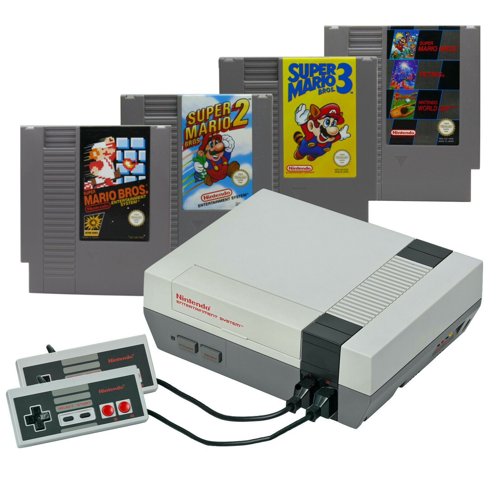

Welcome to the SETU students Retro gaming club

Drop by, and play some old school classics as they were meant to be played! on original hardware and a CRT TV, games will be more difficult than most modern gamers are used to, earning the nickname "Nintendo hard!". Not for the feint of heart were the games of this era. Limited lives and continues and punishing checkpoints. Your fun will last as long as your patience.
Initial Plan for club
This club was intended to also bring back the joys of couch based multiplayer, The move to everything being online just isn't the same, I personally see no difference between playing games with bots or people online. There's nothing quite like when many people are playing a game together, no headsets, no online, just fun.
How the club started
A bunch of computing students had a lot of old consoles and games between us, so we decided that, intead of trying to sell them, we would instead use them as part of a club that people could join, that liked playing retro games.
Please try out these other clubs
Pedro's Karaoke and Brazillian Chicken Enchilada's Thursday
Pedro's Authentic Karaoke night, which includes authentic brazillian food such as Panqueca de Frango(Chicken Enchilada)
Dion's Manga Book club, Every other Wednesday
"For the last time, no, I will not be covering my hero academia. That's last year, if you weren't here, thats not my problem! Almost all are welcome, just not MHA fans....and definitely not naruto fans.....knew i'd regret this....why did i chose every other Wednesday"